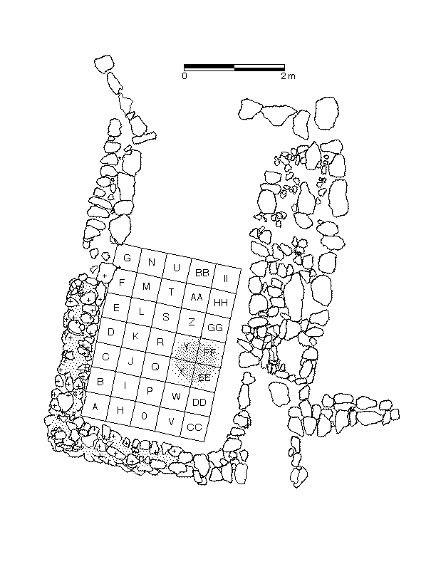
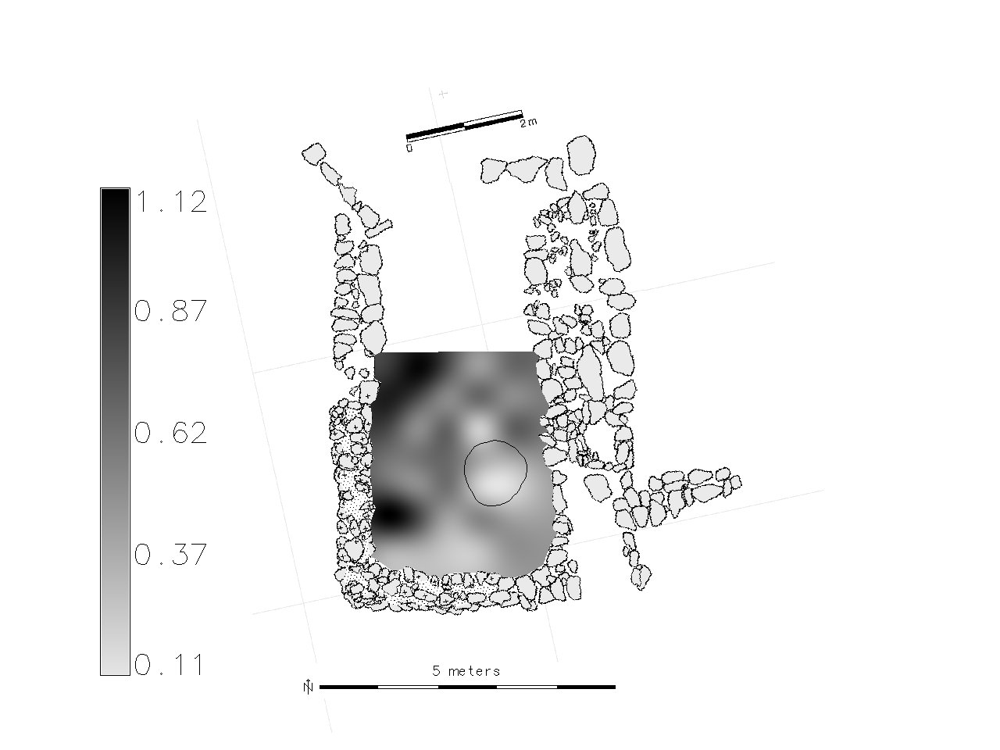
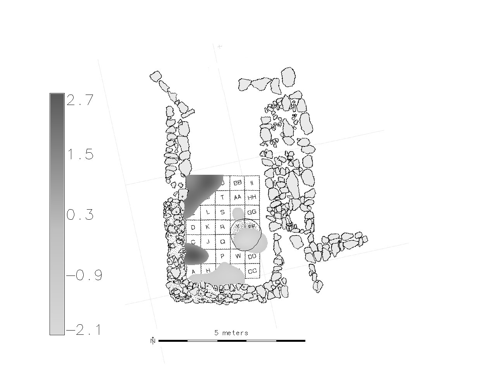
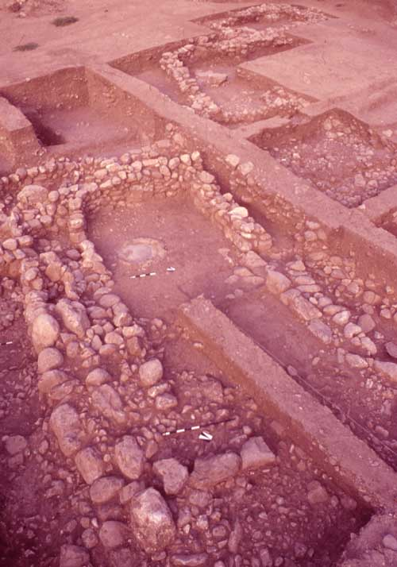

The Wadi Ziqlab Microrefuse Project
Identification and interpretation of activity areas are vitally important aspects of household archaeology, and while there are many methods that identify and quantify spatial patterning of artifacts in archaeological sites (c.f. Hodder and Orton 1976; Kintigh 1990), the major problem with identifying and interpreting this patterning is that due to natural and cultural site formation processes the objects of that patterning may be secondarily deposited in places they were not originally used or discarded (Brooks and Yellen 1987). Early work on site formation processes quickly identified that smaller artifacts may be less subject to disturbance by many site formation processes (LaMotta and Schiffer 1997); therefore microarchaeology (the study of very small cultural material) never before thought of as important, began to be seen as way to get around the problems associated with larger artifacts in activity area analysis (Metcalfe and Heath 1990). Microarchaeology has not, however, been used to its fullest potential, due mostly to widespread misunderstandings among the archaeological community as to what, exactly, microarchaeology is, what it entails, and how difficult it is to do. This paper attempts to address these issues and show that microarchaeology is a powerful archaeological tool that, when used correctly, greatly strengthens archaeological interpretations without prohibitively increasing cost, effort, or time in archaeological fieldwork and labwork, or reducing the quality of the data and the knowledge gained from their analysis. This paper pays special attention to the utility and methods of using microarchaeological data for spatial analysis in household contexts, evaluates and recommends specific sampling strategies, lab methods, and methodologies for spatial analysis of living surfaces, and puts these strategies to a test case in which we use microarchaeological data to analyze a house floor in the Late Neolithic village of Tabaqat Al’ Buma in Northern Jordan.
 |
| Gathering Microrefuse Samples at the Late Neolithic site of Al Basitan, Wadi Ziqlab, Jordan. |
Scroll down for some images related to the microrefuse profect, or you can also download a review of Microarchaeology I wrote a couple of years ago.
Publications and Presentations from the Wadi Ziqlab Microrefuse Project
2012 Ullah,
I.I. Particles
from
the
Past: A
Diachronic Study of the Spatial Patterning of Microrefuse from Room
Floors at
Late Neolithic Tabaqat al-Bûma, Northern Jordan. In: Household
Archaeology: New Perspectives from the Near East
and Beyond. Eisenbrauns, Winona Lake.
2010 Ullah, I.I. Assessing the accuracy of microrefuse sampling techniques. Poster presented at the 75th annual meeting of the Society of American Archaeology in St. Louis, MO. 15-18 April, 2010
2009 Ullah, I.I. Within-room spatial analysis of activity areas at Late Neolithic Tabaqat Al-Buma, Wadi Ziqlab, Al Koura, Jordan. In: Studies in the History and Archaeology of Jordan, X. The Department of Antiquities of Jordan, Amman, pp. 87-95.
2009 Ullah I.I. Particles from the Past: A Diachronic Study of the Spatial Patterning of Microrefusefrom Room Floors at Late Neolithic Tabaqat al-Bûma, Northern Jordan. Paper for presentation at the Household Archaeology in the Middle East and Beyond: Theory, Method and Practice Conference. Feb 19-21, University of Utah, Salt Lake City, USA
2007
Ullah, I.I. Microarchaeology and
the Use of Space at the
Late Neolithic Farmstead of Tabaqat al-Bûma. Paper
presented at the 10th
International Conference on the History and Archaeology of Jordan,
The
George Washington University, Washington, DC
Room G34 Plan
Plan view of room G34 showing the grid laid out for microrefuse sampling.
Example density maps
Density probability surface map of all types of microrefuse combined, and shows the distribution of all micro-debris on the floor of room G34.

Example map of Z-score transformation with 1 standard deviation clipped, showing only areas of significantly high or low artifact concentration. This map is also for all microrefuse types combined, and shows the areas of microartifact concentration which are most probably due to human activity (ie. de facto refuse) and not due to formation processes (ie. background noise).

Photo of G34
- Photo of room G34 shortly before microrefuse samples were collected.
- 